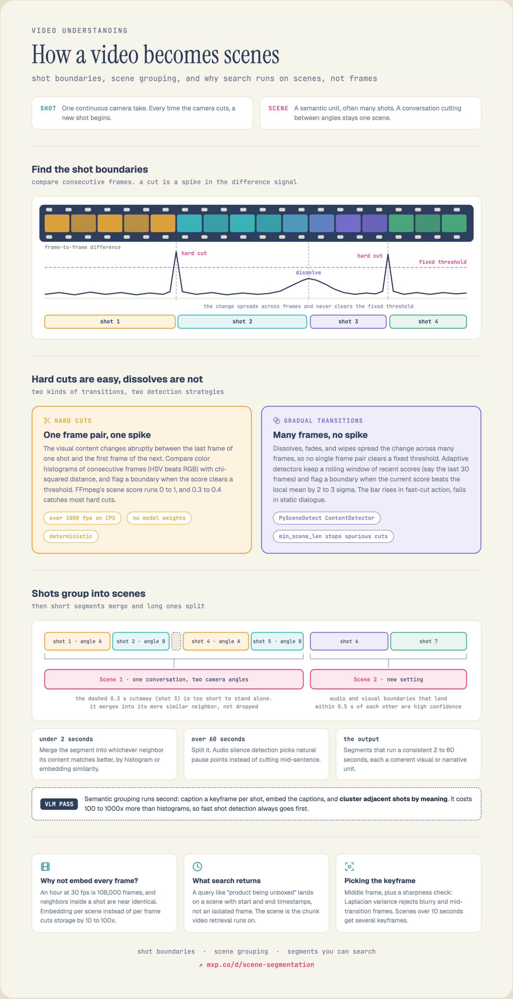

13 Video Temporal Segmentation
A video file has no intrinsic units. It is a stream of pixels and audio samples — 108,000 frames per hour at 30 fps — and every downstream capability discussed in Chapter 12 silently assumes that someone has already cut that stream into pieces. Retrieval needs a chunk to embed and a timestamp to return; captioning needs a span short enough to describe; video-generation training needs clips with no discontinuity inside them. The chunk is the unit of everything, and choosing it is a task in its own right.
The field cuts at two granularities, in two stages:
- A shot is the maximal run of frames from one uninterrupted camera take. Shot boundaries are production artefacts: they were inserted by an editor, they leave a photometric signature in the pixel stream, and they have (in principle) an exact frame index. Detecting them is a signal-processing problem.
- A scene is a maximal run of consecutive shots that is semantically coherent — same location, same time, same characters, same narrative beat. A conversation cutting between two camera angles is many shots and one scene. Scene boundaries leave no reliable low-level signature, because the strongest visual discontinuity inside a scene (an angle change) looks exactly like the one at its edge. Detecting them is a narrative-understanding problem.
That asymmetry is the organising fact of this chapter, and it is worth stating quantitatively up front: on clean benchmarks, shot detection reaches F1 \(\approx 0.97\), while the state of the art in scene detection reaches F1 \(\approx 0.62\). These are not two difficulties of the same task; they are two different tasks that happen to compose.
Section 13.2 lays out the two-stage pipeline and the cost argument that forces the ordering, following the Mixpeek video-understanding pipeline write-up (Mixpeek 2026). Section 13.3 covers shot boundary detection, organised around OmniShotCut (Wang et al. 2026) and its reformulation of the task. Section 13.4 covers scene segmentation, organised around Scene-VLM (Berman et al. 2026) and the shift from encoder classifiers to autoregressive multimodal decoders.
13.1 Notation
| Concept | Notation | Definition |
|---|---|---|
| Frame | \(\mathbf{I}_t \in \mathbb{R}^{H \times W \times 3}\) | Frame at index \(t \in \{0, \ldots, F-1\}\), at native frame rate. |
| Shot | \(s_i = [a_i, b_i]\) | Contiguous frame interval, one camera take. Shots partition the video: \(a_i = b_{i-1} + 1\), \(a_1 = 0\). |
| Transition | \(\mathcal{T}_i \subseteq [b_i, a_{i+1}]\) | The frames over which shot \(i\) gives way to shot \(i+1\). A hard cut has \(\lvert \mathcal{T}_i \rvert = 0\); a gradual transition has \(\lvert \mathcal{T}_i \rvert = L > 0\). |
| Dissimilarity signal | \(d(t)\) | Scalar distance between frames \(t\) and \(t+1\) under some descriptor. |
| Scene | \(\sigma_j = [s_{p}, \ldots, s_{q}]\) | Maximal run of consecutive shots sharing semantic coherence. |
| Boundary label | \(y_i \in \{0,1\}\) | \(y_i = 1\) iff shot \(i\) is the last shot of a scene. Scene segmentation is binary sequence labelling over shots. |
| Tolerance | \(\tau\) | Frame slack allowed when matching a predicted boundary to a ground-truth one (typically \(\tau = 2\)). |
13.2 The Two-Stage Pipeline

13.2.1 Why two stages and not one
The naive alternative — one model that reads the video and emits semantic segments — is not obviously wrong, and Section 13.6 returns to it. What rules it out today is a cost asymmetry of roughly three orders of magnitude. A histogram-difference shot detector runs at over 1000 fps on a CPU with no model weights (Mixpeek 2026); a VLM pass that captions or directly reads each shot costs 100–1000× more. So the pipeline spends its cheap compute first, to reduce an hour of video from 108,000 frames to a few hundred shots, and only then spends expensive compute on the few hundred.
This is the same reduction that makes retrieval tractable. Neighbouring frames inside a shot are near-duplicates, so embedding every frame is redundant; one embedding per scene cuts index storage by 10–100× and makes each result carry a start and end timestamp rather than an isolated frame (Mixpeek 2026). The scene is the unit that video search actually runs on, which is why the two-stage segmenter sits upstream of the retrieval stack of Section 12.4.
13.2.2 Semantic grouping and cleanup
The second stage groups adjacent shots by meaning. The cheap version — and the one most production systems start with — captions one keyframe per shot with a VLM, embeds the captions, and clusters adjacent shots by embedding similarity; Section 13.4 covers what replaces this when accuracy matters. Keyframe choice is not incidental: taking the middle frame of the shot plus a sharpness check (rejecting frames whose Laplacian variance is low) avoids blurry frames and frames sampled in the middle of a dissolve, and shots longer than ~10 s get several keyframes (Mixpeek 2026).
Neither stage produces segments of usable length on its own, so a cleanup pass enforces a duration band. Two rules do most of the work:
- Merge below ~2 s. A 0.3 s reaction cutaway is a real shot but a useless retrieval unit. Merge it into whichever neighbour it matches better by histogram or embedding similarity — merged, not dropped, so the partition stays exhaustive.
- Split above ~60 s. A long segment is split at a point of audio silence, which lands the boundary at a natural pause rather than mid-sentence.
The output is a partition into 2–60 s segments, each a coherent visual or narrative unit. One further signal is worth extracting here: when an audio boundary (speaker change, silence, music cue) and a visual boundary land within ~0.5 s of each other, the boundary is high confidence (Mixpeek 2026). Audio boundary detection is covered in Chapter 29; the cross-modal agreement test is essentially free once both are running.
The 2 s / 60 s / 0.5 s constants are tuned to a retrieval product, not derived. Data curation for video-generation training uses a different band (a few seconds, hard-cut-free), chaptering uses minutes, and broadcast archiving follows editorial rules. What transfers is the structure — cheap boundary detection, then semantic grouping, then duration normalisation — not the numbers.
13.3 Shot Boundary Detection
13.3.1 The signal and why it breaks
Classical shot boundary detection reduces the video to a scalar dissimilarity signal and looks for peaks. The standard descriptor is a colour histogram — HSV rather than RGB, because separating chroma from luminance makes the descriptor less sensitive to illumination change — compared under a \(\chi^2\) distance,
\[ d(t) \;=\; \sum_{b=1}^{B} \frac{\bigl(h_t[b] - h_{t+1}[b]\bigr)^2}{h_t[b] + h_{t+1}[b]}, \tag{13.1}\]
where \(h_t\) is the normalised histogram of frame \(t\) over \(B\) bins. A hard cut makes \(d(t)\) an impulse, and a fixed threshold catches it. FFmpeg’s scene score is a variant of this normalised to \([0,1]\), where 0.3–0.4 catches most hard cuts (Mixpeek 2026). This is the whole of PySceneDetect’s fast path (Castellano 2025): deterministic, weight-free, and faster than the decoder that feeds it.
It fails on gradual transitions, and the reason is worth being precise about. A dissolve of length \(L\) interpolates between shots, \(\mathbf{I}_{t} \approx (1-\alpha_t)\mathbf{A} + \alpha_t \mathbf{B}\) with \(\alpha_t\) sweeping \(0 \to 1\) over \(L\) frames. The total change is the same as a hard cut, but it is spread across \(L\) frame pairs, so
\[ \max_t d(t) \;=\; \mathcal{O}\!\left(\frac{1}{L}\right)\quad\text{for a gradual transition, versus }\mathcal{O}(1)\ \text{for a hard cut.} \tag{13.2}\]
For \(L = 30\) frames, Equation 13.2 puts the peak an order of magnitude below the hard-cut threshold, indistinguishable from ordinary camera motion. Lowering the threshold to catch it floods the detector with false positives in any action sequence.
The classical repair is adaptive thresholding: maintain a rolling window \(\mathcal{W}_t\) of the last ~30 scores and flag a boundary when
\[ d(t) \;>\; \mu(\mathcal{W}_t) \;+\; k\,\sigma(\mathcal{W}_t), \qquad k \in [2, 3], \tag{13.3}\]
which is what PySceneDetect’s ContentDetector implements, with a min_scene_len guard against spurious repeated cuts (Mixpeek 2026; Castellano 2025). The bar now rises automatically in fast-cut action and falls in static dialogue. But adaptive thresholding only rescales the statistic; it does not recover the \(\mathcal{O}(1/L)\) signal loss, because a long dissolve raises its own local mean. The real fix is to stop differencing adjacent frames and start aggregating evidence over a window — which is exactly what a learned temporal model does.
13.3.2 The dense-input constraint
One property separates SBD from every other video task in this book. The event being detected lives between two adjacent frames, so temporal subsampling is not available: a detector that reads 2 fps cannot localise a boundary to the frame. SBD must consume the native frame rate.
Since the compute budget is fixed, that constraint is paid for in space. TransNet V2 and its lineage downsample aggressively — to \(48 \times 27\) pixels — and spend the savings on temporal density (Souček and Lokoč 2024; Wang et al. 2026). This is the opposite trade from the video VLMs of Section 12.3, which keep high spatial resolution and sample a handful of frames per second. It is a good sanity check when reading a video paper: which axis is it spending on, and does that match the event it claims to detect?
13.3.3 Transition taxonomy
Transitions are not a long tail of curiosities; they are a finite, enumerable set, because they are produced by a finite set of editing tools. OmniShotCut’s synthesis pipeline reproduces 9 main families and 30 subtypes (Wang et al. 2026); Table 13.2 groups them by what they do to the dissimilarity signal of Equation 13.1.
| Family | Subtypes | Signature in \(d(t)\) | Difficulty |
|---|---|---|---|
| Hard cut | — | Single impulse | Easy; solved by Equation 13.1 |
| Dissolve | Transparent, cross-blur, ripple | Broad low bump, \(\mathcal{O}(1/L)\) | Hard for thresholds; endpoints ill-defined even for humans |
| Fade | To/from black, to/from white, dip | Ramp to a constant frame | Endpoints ambiguous; the “boundary” frame is often a black frame |
| Wipe | Unidirectional, diagonal, circular, bar, ripple, page-curl, mosaic | Spatially localised change; global histogram barely moves | Global descriptors fail structurally |
| Push / Slide | Unidirectional, puzzle, horizontal, whip-pan, cube | Looks like fast camera motion | Confusable with genuine pans |
| Zoom | Zoom in/out, spin in/out, cross zoom, swap | Looks like a zoom | Confusable with genuine zooms |
| Doorway | Doorway open | Structured occlusion | Rare; absent from legacy training sets |
| Sudden jump | — | Impulse, but within one nominal shot | Under-modelled; see below |
The last row is OmniShotCut’s addition to the task. A sudden jump is a frame-to-frame discontinuity produced when an editor removes a short span from the middle of an otherwise continuous take: excessive abrupt motion or texture change between two consecutive frames, with no transition effect. Classical SBD ignores it because it is not a “cut” in the editorial sense. But it breaks every downstream consumer that assumes a shot is temporally continuous — point tracking, video object segmentation, and above all the temporal VAEs of Chapter 15, which compress several frames into shared tokens and are badly served by a subject teleporting across the frame mid-token (Wang et al. 2026; Agarwal et al. 2025).
A frame-strip visualisation of the transition families — for each of dissolve, fade, wipe, slide, zoom, doorway, sudden jump, and hard cut, a row of ~6 consecutive frames spanning shot A → transition → shot B, with the transition region shaded. OmniShotCut’s Figure 2 is the direct source (Wang et al. 2026).
13.3.4 Learned detectors
Deep SBD has been a 3D-CNN story since DeepSBD (Hassanien et al. 2017). The formulation is uniform across DeepSBD, ClipShots (Tang et al. 2018), TransNet / TransNet V2 (Souček et al. 2019; Souček and Lokoč 2024), and AutoShot (Zhu et al. 2023): slide a small 3D CNN over a stack of heavily downsampled frames, emit a per-frame probability that the frame is inside a transition, threshold, and post-process into intervals. TransNet V2 remains the default production detector; AutoShot improved it by curating a short-video training set closer to modern content.
Three limitations of this formulation motivate what follows.
- The output is a bare interval. Nothing tells the consumer whether a boundary was a hard cut, a dissolve, or a scene change. A video-generation data pipeline that wants clean vanilla segments and a media system that wants transition-aware indexing get the same undifferentiated output.
- Sudden jumps are invisible. They are not annotated in any legacy dataset, so they are not learned.
- The supervision is unreliable. Humans cannot localise the first and last frame of a dissolve or fade — the per-frame change in opacity is below perceptual threshold — so gradual-transition labels in BBC (Baraldi et al. 2015a), RAI (Baraldi et al. 2015b) and IACC.3 (Awad et al. 2017) are noisy where the task is hardest. These benchmarks are also drawn from legacy broadcast footage and do not cover anime, screen recordings, gameplay, or short-form vertical video.
Table 13.3 summarises the resulting landscape.
| Method | Type | Idea | Output |
|---|---|---|---|
| PySceneDetect (Castellano 2025) | Handcrafted | HSV histogram + adaptive threshold | Hard cuts, intervals |
| Koala-36M (Wang et al. 2025) | Handcrafted | Structural-similarity filtering at dataset scale | Hard cuts, intervals |
| DeepSBD (Hassanien et al. 2017) | 3D CNN | Learned spatio-temporal transition classifier | Intervals |
| TransNet V2 (Souček and Lokoč 2024) | 3D CNN | Dilated DDCNN cells at \(48\times27\); production default | Per-frame transition prob. |
| AutoShot (Zhu et al. 2023) | 3D CNN | NAS-searched architecture + short-video training set | Per-frame transition prob. |
| OmniShotCut (Wang et al. 2026) | Shot-query Transformer | Relational prediction: ranges + intra/inter labels | Shots + transition type + continuity relation |
13.3.5 OmniShotCut: SBD as relational prediction
OmniShotCut (Wang et al. 2026) changes what the model outputs. Instead of a boundary indicator, it emits, for each shot \(i\), a triple
\[ \bigl(\,p^{\text{end}}_i,\; c^{\text{intra}}_i,\; c^{\text{inter}}_i\,\bigr), \]
where \(p^{\text{end}}_i\) localises the shot’s last frame, \(c^{\text{intra}}_i\) classifies the shot’s own content into 8 categories (vanilla general video, plus dissolve / wipe / push / slide / zoom / fade / doorway when the shot is a transition region), and \(c^{\text{inter}}_i\) classifies its relationship to the preceding shot as a transition, a hard cut, or a sudden jump. The intra-label says what this segment is; the inter-label says how it joins to what came before. Both are the information downstream consumers were previously inferring by heuristic.
Architecture. The model is DETR (see Section 5.5) transplanted to the time axis. A ResNet-18 encodes frames independently; the resulting \(F \times H \times W\) feature grid is flattened to a single token sequence in \(\mathbb{R}^{d \times (F \cdot H \cdot W)}\) with 3D sinusoidal position embeddings over \((t, x, y)\) following VisTR (Y. Wang et al. 2021); a Transformer encoder mixes them; and a decoder consumes a fixed set of 24 learned shot queries, each of which aggregates evidence for one shot and is decoded by three heads. Total 34.5M parameters, of which 11.2M is the backbone.
Range prediction as classification. The one design choice worth dwelling on. A DETR-style head would regress normalised interval coordinates with \(L_1\) + 1D GIoU. OmniShotCut instead makes the range head a softmax over frame indices: \(p^{\text{end}}_i \in \Delta^{F-1}\). Two consequences follow. Because shots partition the video, the start of shot \(i\) is implied by the end of shot \(i-1\), so queries are intrinsically ordered and Hungarian matching is unnecessary — the ordered assignment that DETR must solve is given by the problem structure. And because the head is categorical, there is no threshold and no interval post-processing.
The training objective, Equation 13.4, is three cross-entropies with a heavy weight on localisation (\(\lambda_{\text{range}} = 5\) against \(\lambda_{\text{intra}} = \lambda_{\text{inter}} = 1\)), with auxiliary supervision at intermediate decoder layers:
\[ \mathcal{L} = \frac{1}{N}\sum_{i=1}^{N} \Bigl[\lambda_{\text{range}}\,\mathrm{CE}\bigl(p^{\text{end}}_i, y^{\text{end}}_i\bigr) + \lambda_{\text{intra}}\,\mathrm{CE}\bigl(p^{\text{intra}}_i, y^{\text{intra}}_i\bigr) + \lambda_{\text{inter}}\,\mathrm{CE}\bigl(p^{\text{inter}}_i, y^{\text{inter}}_i\bigr)\Bigr]. \tag{13.4}\]
The classification-vs-regression ablation (Table 13.5) is more interesting than a clean win. Regression is better at transition IoU (0.718 vs 0.644) — unsurprising, since a continuous head optimises interval overlap directly — but worse at zero-tolerance sudden-jump accuracy (0.717 vs 0.759) and at range F1 (0.857 vs 0.881). Regression smooths; classification commits. When the target is a specific frame index, the last one or two frames are exactly what a regression loss cannot resolve, and those frames are the entire content of a hard cut.
The shot-query decoder: frame tokens from a ResNet backbone, flattened with 3D \((t,x,y)\) positional embeddings, through the Transformer encoder; \(N\) learned shot queries cross-attending to frame features and decoding into range / intra / inter heads. OmniShotCut Figure 4 (Wang et al. 2026).
Synthetic supervision. The training data contains no human labels at all, and the argument for this is the strongest idea in the paper. Transitions are generated by editing software from known parameters. Annotating them is therefore an inverse problem — reverse-engineering a parametric effect from pixels, at a precision humans demonstrably lack — whereas synthesising them is the forward problem, with exact ground truth by construction. This is the same reasoning that produced synthetic degradation pipelines in blind super-resolution (X. Wang et al. 2021).
The pipeline curates ~2.5M raw internet videos down to ~1.5M clean clips by filtering on resolution / fps / duration, verifying temporal continuity via DINOv3 (Siméoni et al. 2025) cosine similarity between sampled frames (\(\varepsilon_{\text{sim}} = 0.9\)), and estimating motion strength with CoTracker3 (Karaev et al. 2025) dense point tracking. It then composes 300K synthetic videos carrying 11.9M labelled transitions. Two distributional choices matter more than the effects themselves:
- Semantic clustering of sources. Clips are grouped into 27,000 hierarchical \(k\)-means clusters over DINOv3 embeddings, following the automatic-curation recipe of Vo et al. (Vo et al. 2024), and 75% of transitions join two clips from the same cluster. Random pairing makes the task trivial — a mountain cutting to a kitchen is discriminable from the colour histogram alone. Same-cluster pairing forces the model onto fine-grained temporal cues. Removing it costs 9.3 points of transition IoU and 10.5 points of inter-relation accuracy (Table 13.5), and it is the inter-label — the hard-cut-vs-sudden-jump distinction — that suffers most, exactly as one would predict.
- Matching the real cut-rate distribution. Under random synthesis, fewer than 0.005% of samples contain more than five consecutive hard cuts, though rapid cutting is common in real editing. Forcing 25% of the corpus to be dense and short (28 clips of 0.15–1.0 s) raises sudden-jump accuracy from 0.509 to 0.759.
The general lesson is that when supervision is synthetic, the marginal distribution of the synthesiser is a hyperparameter as consequential as the architecture, and matching it to the deployment distribution is where most of the gain lives.
13.3.6 Benchmarks and metrics
Boundary detection is scored by matching predicted boundaries to ground-truth boundaries within a tolerance \(\tau\), then computing precision, recall and F1 over the matching. Three details are easy to get wrong:
- Tolerance. \(\tau = 2\) frames is the convention, following the ShotBench protocol used in Cosmos (Agarwal et al. 2025). Numbers are not comparable across different \(\tau\).
- Micro- not macro-averaging. Counts are accumulated across all videos before computing the ratios, rather than averaging per-video F1, because cut counts vary by an order of magnitude between videos.
- F1 hides the interesting failures. A detector can score well on range F1 while placing every dissolve boundary in the middle of the dissolve. OmniShotCut therefore reports two diagnostic metrics alongside it: transition IoU, the temporal intersection-over-union between predicted and ground-truth transition intervals (with the tolerance widened in proportion to the annotator’s confidence score), and sudden-jump accuracy at zero tolerance, since a sudden jump is instantaneous by definition.
OmniShotCutBench is 114 one-minute videos standardised to 480p/30 fps, spanning vlog, anime, movie, concert, documentary, screen recording, gameplay and sports, annotated by trained annotators with per-boundary confidence scores, and disjoint from all synthetic training data. It is the response to the observation that BBC, RAI and IACC.3 are legacy broadcast footage with noisy gradual-transition labels.
| Method | Trans. IoU | Jump Acc. | P | R | F1 | Intra | Inter | BBC P | BBC R | BBC F1 |
|---|---|---|---|---|---|---|---|---|---|---|
| PySceneDetect | 0.183 | 0.417 | 0.833 | 0.689 | 0.755 | — | — | 0.893 | 0.884 | 0.889 |
| TransNet V2 | 0.193 | 0.262 | 0.913 | 0.735 | 0.814 | — | — | 0.983 | 0.951 | 0.967 |
| AutoShot | 0.253 | 0.455 | 0.849 | 0.783 | 0.815 | — | — | 0.984 | 0.922 | 0.952 |
| OmniShotCut | 0.644 | 0.759 | 0.904 | 0.859 | 0.881 | 0.962 | 0.827 | 0.967 | 0.974 | 0.971 |
Read Table 13.4 as two separate findings. On BBC, everything works: four methods spanning three decades of technique sit between F1 0.889 and 0.971. Legacy hard-cut detection in broadcast footage is a solved problem, and reporting only BBC numbers cannot distinguish methods. On OmniShotCutBench, range F1 spreads modestly (0.755 → 0.881) but the diagnostic metrics separate sharply: transition IoU goes from 0.18–0.25 to 0.64, and sudden-jump accuracy from 0.26–0.46 to 0.76. Prior detectors were finding that something happened while being 2.5–3.5× worse at saying where and what. This is the concrete payoff of the relational formulation, and it is invisible under the metric the field had been reporting.
| Ablation | Setting | Trans. IoU | Jump Acc. | Range F1 | Intra / Inter Acc. |
|---|---|---|---|---|---|
| Range head | Classification | 0.644 | 0.759 | 0.881 | 0.962 / 0.827 |
| \(L_1\) + 1D GIoU | 0.718 | 0.717 | 0.857 | 0.956 / 0.809 | |
| Source clustering | SSL clusters (75%) | 0.644 | 0.759 | 0.881 | 0.962 / 0.827 |
| Random pairing | 0.551 | 0.664 | 0.861 | 0.957 / 0.722 | |
| Cut-rate prior | 25% dense/short | 0.644 | 0.759 | 0.881 | 0.962 / 0.827 |
| Natural (random) | 0.610 | 0.509 | 0.831 | 0.955 / 0.790 | |
| Resolution | \(64\times96\) | 0.582 | 0.699 | 0.877 | 0.959 / 0.818 |
| \(96\times128\) | 0.644 | 0.759 | 0.881 | 0.962 / 0.827 | |
| \(128\times160\) | 0.584 | 0.723 | 0.867 | 0.954 / 0.794 | |
| Shot queries | 12 | 0.556 | 0.735 | 0.876 | 0.953 / 0.833 |
| 24 | 0.644 | 0.759 | 0.881 | 0.962 / 0.827 | |
| 48 | 0.590 | 0.753 | 0.873 | 0.959 / 0.811 |
13.4 Scene Boundary Detection
13.4.1 Formulation
The input is now the shot sequence \(s_1, \ldots, s_M\) produced by Section 13.3, each represented by a few keyframes and optionally by aligned text. The output is a binary label per shot, \(y_i = 1\) iff shot \(i\) closes a scene. On MovieNet a feature film is ~1000 shots, so this is long-range sequence labelling with a sparse positive class.
Every pre-2025 method factorises the problem the same way — a point-wise classifier over a local window of \(2w+1\) shots,
\[ \hat{y}_i \;=\; f_\theta\bigl(s_{i-w}, \ldots, s_{i}, \ldots, s_{i+w}\bigr), \tag{13.5}\]
with each \(\hat{y}_i\) computed independently. LGSS (Rao et al. 2020), ShotCoL (Chen et al. 2021), BaSSL (Mun et al. 2022), TranS4mer (Islam et al. 2023) and MEGA (Sadoughi et al. 2023) differ in how \(f_\theta\) is built and pretrained, not in this factorisation.
Two things are wrong with Equation 13.5, and both are what Scene-VLM attacks:
- Independence. Boundary labels are strongly dependent — two scene boundaries one shot apart is nearly impossible — and Equation 13.5 cannot express that, since \(\hat{y}_i\) never sees \(\hat{y}_{i-1}\).
- Visual-centric bias. A scene is defined by location, time, characters and narrative theme. Dialogue and character identity are direct evidence for three of those four, but appear in these models only as auxiliary fused features, if at all.
A shot boundary has a ground truth: an editor put it there. A scene boundary is an interpretation, and two annotators watching the same film will not agree everywhere. The published F1 ceiling of ~0.62 should be read against an unmeasured human agreement ceiling, not against 1.0. MovieNet does not report inter-annotator agreement, which makes the headroom in this task genuinely unknown.
13.4.2 The encoder era
The progression is a compressed replay of representation learning generally.
- Unsupervised clustering (Baraldi et al. 2015b) grouped visually similar shots with hand-crafted descriptors. Label-free, but it can only find visual continuity, which is the wrong invariant: a shot/reverse-shot conversation is visually discontinuous and semantically one scene.
- Deep embeddings and sequence models. A Siamese CNN over shot pairs (Baraldi et al. 2015a) replaced hand-crafted features; LSTMs modelled continuity across shots. MovieNet (Huang et al. 2020) then made large-scale supervision possible and, critically, shipped subtitles, speech and character identities alongside the frames.
- LGSS (Rao et al. 2020) made the multimodal, local-to-global structure explicit: aggregate place / cast / action / audio features locally, then reason globally over the whole movie.
- Self-supervised shot representations. ShotCoL (Chen et al. 2021) learned shot embeddings contrastively, using temporal adjacency as the positive-pair signal. BaSSL (Mun et al. 2022) sharpened this into boundary-aware pretraining: construct pseudo-boundaries, and pretrain with objectives that require detecting them, so the representation is shaped by the downstream task rather than by generic similarity.
- Efficient long-range modelling. TranS4mer (Islam et al. 2023) interleaves self-attention with state-space (S4) layers, buying long-range temporal mixing at sub-quadratic cost. It remains the efficiency reference point: 37M parameters, 1 GB, 0.24 s per 10 decisions.
- Multimodal fusion and distillation. MEGA (Sadoughi et al. 2023) aligns video, subtitles and screenplay through cross-modal attention and distillation, and is the strongest F1 among encoder methods (55.3) — evidence that the text signal was always there to be used.
A parallel line targets video chaptering on web video (Yang et al. 2023), where boundaries are semantic and need not align to shots. Chapter-LLaMA (Ventura et al. 2025) feeds transcripts and keyframe captions to an LLM. The two lines fail on each other’s domain in an instructive way: Chapter-LLaMA scores 38.6 F1 on MovieNet, because caption-based reasoning discards the visual structure that carries cinematic scene changes, while Scene-VLM underperforms Chapter-LLaMA on VidChapters when the latter uses its native LLaMA backbone. Cinematic scenes are visual; web chapters are spoken. Table 13.6 collects what each family can and cannot do.
| Method | Sequential prediction | Confidence scores | Explainability | Cinematic | Chaptering |
|---|---|---|---|---|---|
| ShotCoL (Chen et al. 2021) | ✗ | ✓ | ✗ | ✓ | ✗ |
| BaSSL (Mun et al. 2022) | ✗ | ✓ | ✗ | ✓ | ✗ |
| TranS4mer (Islam et al. 2023) | ✗ | ✓ | ✗ | ✓ | ✗ |
| MEGA (Sadoughi et al. 2023) | ✗ | ✓ | ✗ | ✓ | ✗ |
| Chapter-LLaMA (Ventura et al. 2025) | ✓ | ✗ | ✓ | ✗ | ✓ |
| Scene-VLM (Berman et al. 2026) | ✓ | ✓ | ✓ | ✓ | ✓ |
13.4.3 Scene-VLM: sequence labelling as generation
Scene-VLM (Berman et al. 2026) fine-tunes Qwen2.5-VL-7B (Bai et al. 2025) (see Section 12.3.2) to emit boundary decisions as text. The conceptual move is to replace Equation 13.5 with an autoregressive factorisation,
\[ p\bigl(y_{1:T} \mid C\bigr) \;=\; \prod_{i=1}^{T} p_\theta\bigl(y_i \mid y_{<i},\, C\bigr), \tag{13.6}\]
where the context \(C = \{s_i\}_{i=1}^{N}\) is a sequence of multimodal shot representations. Each \(s_i\) carries \(K\) keyframes, the shot’s transcript (from provided subtitles or Whisper, Chapter 28), and optional metadata such as actor identity. The model is prompted to emit shot_id: Yes/No per shot, and trained with ordinary next-token prediction. Making the decisions tokens in one sequence is what makes the dependency in Equation 13.6 free.
Four design choices carry the result.
Context–focus windows. Predictions are emitted only for a focus window of \(l_{\text{focus}}\) shots centred inside a larger context window of \(l_{\text{context}}\) shots — 10 inside 20 by default. Shots at the edge of a context window have evidence on one side only, and Table 13.10 shows this is not a small effect: without margins, per-position F1 collapses at the edges, while with margins it is flat across all ten positions. This is “valid” padding applied to time, and it is the sort of detail that separates a working system from a reproduction.
Confidence from token logits. VLMs have no classification head, but the Yes/No token position is a genuine binary branch point, so restricting the softmax to those two tokens recovers a usable score:
\[ \mathrm{conf}_i \;=\; \frac{p_i(\texttt{Yes})}{p_i(\texttt{Yes}) + p_i(\texttt{No})}. \tag{13.7}\]
This is what makes AP computable and gives the precision–recall control that encoder classifiers had for free. F1 peaks at 0.641 near threshold 0.438 and stays within 0.62–0.64 over thresholds 0.27–0.56, so the operating point is not delicate.
The failed alternative is more instructive than the success. A “concise” output format that emits only the IDs of boundary shots is 8.3× faster (10.5 s vs 87.2 s per movie) and still competitive (53.4 F1, between TranS4mer and MEGA) — but its confidence scores are meaningless, because \(p(\texttt{Yes} \mid \texttt{shot\_id}\ \text{already emitted}) \approx 1\). Having committed to emitting the shot ID, the model has already made the decision; the Yes token is a formatting obligation, not a choice. A token’s logit is only informative if the token sits at a real branch point in the output distribution — a general caution for anyone extracting confidence from a generative model. Recovering confidence by repeated sampling instead is strictly worse on both axes: 52.6 F1 at 105.2 s per movie.
Shot-ID markers. A small high-contrast numeric tag is overlaid on the top-left of each frame, binding the pixels to the shot ID used in the text prompt. Removing it costs 1.3 F1 — small, but it is a nearly free fix for a real grounding ambiguity when 60 frames share one context window.
Explainability by minimal alignment. Prompting the boundary-trained model for rationales fails badly (22/30 parse failures, 14/30 hallucinations). A second fine-tuning stage on 35 human-written rationales removes both entirely (0/30, 0/30). The lesson is about format, not knowledge: the capability was latent in the backbone and needed only enough supervision to fix the output contract.
The Scene-VLM inference diagram: a strip of \(N\) shot representations (keyframes with overlaid shot-ID tags, subtitles, actor metadata), the context window in grey with the focus window highlighted, the autoregressive Shot i: Yes/No output, and the Yes/No logit probe feeding Equation 13.7. Scene-VLM Figure 2 (Berman et al. 2026).
What the model attends to. Aggregate attention mass is dominated by visual tokens, but visual tokens also vastly outnumber the others; after normalising by token count, subtitles and actor IDs receive attention comparable to frames. The ablation in Table 13.9 agrees: removing vision is catastrophic (62.1 → 32.0 F1) while text alone is nearly useless (31.5), yet the text modalities each contribute ~1 F1 point on top of vision. Vision is necessary; text is a genuine but marginal complement.
A second observation is more surprising. Attention from a shot’s verdict token skews toward subsequent shots rather than preceding ones. The authors’ explanation is that information about preceding shots is already encoded in the previously generated verdict tokens, so the model spends its attention on the evidence it has not yet summarised. If correct, this is a mechanistic argument for why Equation 13.6 helps: sequential decoding does not merely add a prior over label sequences, it frees attention capacity.
13.4.4 Benchmarks and metrics
Table 13.7 lists the datasets used across both stages.
| Dataset | Domain | Size | Used for |
|---|---|---|---|
| MovieNet-318 (Huang et al. 2020) | Cinematic | 318 movies, ~1000 shots each; 190 / 64 / 64 split | Primary supervised benchmark |
| BBC Planet Earth (Baraldi et al. 2015a) | Documentary | 10 episodes, ~50 min each; 670 scenes, 4.9K shots | Zero-shot OOD; also a legacy shot benchmark |
| VidChapters-7M (Yang et al. 2023) | Web video | Creator-provided chapter titles; 1000 train / 300 eval subset | Chaptering transfer |
| OmniShotCutBench (Wang et al. 2026) | Wide-domain | 114 videos, 114 min, 480p/30fps | Modern shot detection |
| RAI (Baraldi et al. 2015b), IACC.3 (Awad et al. 2017) | Broadcast | Legacy | Historical shot detection |
Two metrics are standard, and the difference matters. AP is the area under the precision–recall curve over the confidence scores — threshold-free, and the number to trust. F1 is reported at an optimised operating point, i.e. tuned on the evaluation set, so it is an oracle-threshold number and systematically optimistic; it is comparable across papers only because everyone tunes the same way. When a method reports F1 but cannot produce calibrated scores, AP is unavailable — which is precisely why Equation 13.7 was needed.
| Method | MovieNet F1 | MovieNet AP | BBC AP (zero-shot) |
|---|---|---|---|
| Chapter-LLaMA (Ventura et al. 2025) | 38.6 | 41.5 | — |
| LGSS (Rao et al. 2020) | — | 47.1 | — |
| ShotCoL (Chen et al. 2021) | — | 53.4 | — |
| BaSSL (Mun et al. 2022) | 47.0 | 57.4 | 40.0 |
| TimeSformer (Bertasius et al. 2021) | — | — | 42.2 |
| MEGA (Sadoughi et al. 2023) | 55.3 | 58.6 | — |
| TranS4mer (Islam et al. 2023) | 48.4 | 60.8 | 43.6 |
| Scene-VLM (Berman et al. 2026) | 62.1 | 66.8 | 45.8 |
In Table 13.8, Scene-VLM gains +13.7 F1 / +6.0 AP over TranS4mer and +6.8 F1 / +8.2 AP over MEGA. Note that F1 and AP rank the encoder methods differently (MEGA leads on F1, TranS4mer on AP), which is what one expects when F1 is threshold-optimised: MEGA has a better single operating point, TranS4mer a better ranking. And note the absolute level. The best reported number on the primary benchmark is F1 0.62 — for a binary classification problem — against F1 0.97 for shot detection on BBC.
Fine-tuning is not optional. Zero-shot Qwen2.5-VL-7B scores 11.1 F1 and fails to follow the output format 7.9% of the time; zero-shot Claude 4.5 Sonnet reaches 37.6 F1 with near-perfect formatting but still no confidence scores, since its logits are inaccessible. The fine-tuned 7B model reaches 61.8 F1 (at \(K=1\)) with zero parse failures under rule-based parsing. Whatever Scene-VLM learns in ~29k LoRA training samples, frontier VLMs do not have it zero-shot.
| Ablation | Setting | F1 | AP |
|---|---|---|---|
| Full model | Visual + shot-ID + subtitles + actor-ID | 62.1 | 66.8 |
| Remove one | − visual | 32.0 | 34.7 |
| − shot-ID markers | 60.8 | 64.1 | |
| − subtitles | 61.1 | 62.2 | |
| − actor-ID | 61.3 | 62.0 | |
| Keep one | visual only | 58.6 | 61.4 |
| subtitles only | 31.5 | 33.2 | |
| actor-ID only | 24.8 | 28.6 |
| Ablation | Setting | F1 |
|---|---|---|
| Context & focus | 20 & 20 (no margin) | 59.7 |
| 20 & 10 | 62.1 | |
| 20 & 5 | 61.9 | |
| 20 & 1 (point-wise) | 60.1 | |
| 10 & 10 (no margin) | 58.4 | |
| 10 & 1 | 59.4 | |
| 5 & 5 (no margin) | 55.8 | |
| Frames/shot \(K\) | 1 / 2 / 3 | 61.8 / 61.9 / 62.1 |
| Model size | 1.5B / 3B / 7B | 55.9 / 59.6 / 62.1 |
13.5 Cost and Deployment
The accuracy gains are real and so is their price. Table 13.11 puts the two eras side by side.
| System | Params | Memory | Latency (10 decisions) | F1 | AP |
|---|---|---|---|---|---|
| TranS4mer-3F (Islam et al. 2023) | 37M | 1 GB | 0.24 s | 48.4 | 60.8 |
| Scene-VLM-1F (3B) | 3B | 7 GB | 1.15 s | 55.7 | 58.2 |
| Scene-VLM-3F (3B) | 3B | 9 GB | 1.35 s | 59.6 | 62.8 |
| Scene-VLM-1F (7B) | 7B | 16 GB | 1.84 s | 61.8 | 65.3 |
| Scene-VLM-3F (7B) | 7B | 18 GB | 2.34 s | 62.1 | 66.8 |
Three deployment regimes follow, and they want different things:
- Data curation at scale (video-generation training corpora, Chapter 15). Only stage one matters, but it must be transition-aware and sudden-jump-aware: a clip with a dissolve at its head or a discontinuity in its middle is training poison for a temporal VAE. This is OmniShotCut’s target, and the 3.3× gap in transition IoU over TransNet V2 is the argument.
- Retrieval indexing. PySceneDetect for shots, keyframe captions + adjacent-shot clustering for scenes, and the 2 s / 60 s cleanup rules of Section 13.2. Scene boundaries need only be good enough that the retrieved segment is watchable, and the cheap pipeline clears that bar at a fraction of the cost.
- Media operations with human review. Confidence scores and rationales stop being niceties: an editor triaging boundary proposals needs to sort by confidence and to check the model’s reasoning against narrative intent. This is the regime that justifies Scene-VLM’s price, and the 8.3× cheaper “concise” variant is the fallback when precision–recall control is not required.
The two stages are trained and evaluated in isolation, and this hides a real failure mode. MovieNet ships ground-truth shot boundaries, so every published scene model has been evaluated on perfect shot input. In deployment the shot detector runs first, and its errors — a missed gradual transition, a dissolve boundary placed mid-dissolve — silently corrupt the shot representations the scene model consumes. No published benchmark measures this propagation.
13.6 Open Problems
The scene is not well defined. No published inter-annotator agreement exists for MovieNet scene boundaries, so nobody knows whether F1 0.62 is halfway to the ceiling or nearly at it. This is the single most important missing measurement in the task, and it is cheap to obtain.
Cascade error is unmeasured. See the note above. An end-to-end benchmark that runs a real shot detector into a scene model would tell us how much of the scene-segmentation gap is actually shot-detection debt.
Domain generalisation is poor in both directions. On MovieNet, Chapter-LLaMA trails Scene-VLM by 23.5 F1 (38.6 vs 62.1), because caption-based reasoning discards the visual structure that carries cinematic scene changes. On VidChapters the ordering reverses: Chapter-LLaMA with its native LLaMA-3.1 backbone reaches 42.6 F1 against Scene-VLM’s 32.2 — though under a matched Qwen backbone Scene-VLM leads (32.2 vs 28.4), so part of that gap is backbone rather than method. Either way, no published system covers both regimes without retraining.
Audio is barely used. Scene-VLM consumes transcripts, not audio. Score, ambience, and silence are among the strongest scene cues a film editor deliberately places — a music cue frequently is the boundary — and the cross-modal agreement heuristic of Section 13.2 suggests the signal is easy to exploit. The sound-event and audio-scene machinery of Chapter 33 is sitting unused here.
Online and streaming variants are absent. Both formulations are offline: OmniShotCut reads a 100-frame clip, Scene-VLM needs a right-context margin by construction. Live segmentation has to commit to boundaries without future evidence, and nothing in either literature addresses the resulting latency/accuracy trade-off.
One stage instead of two? The two-stage split is justified by cost, not by correctness, and the cost argument weakens as long-context video models improve. A model that reads a whole video and emits a semantic partition directly would avoid cascade error entirely. Nothing today comes close on either accuracy or cost, but this is the direction the cost curve points.
Synthetic supervision has a horizon. OmniShotCut’s own limitation section is honest: a parameterised synthesiser reproduces the transitions someone thought to parameterise. Elaborate cinematic transitions built from industry template libraries lie outside the generated distribution, and there is no obvious way to discover what is missing except by finding failures.
13.7 Summary
Temporal segmentation is where video understanding starts, and it splits cleanly into two problems that share a name and nothing else.
Shot detection is a signal-processing problem with a physically real ground truth. It has been essentially solved on legacy hard-cut benchmarks since the first 3D CNNs, and OmniShotCut’s contribution is to show that the metric which certified this — range F1 — was hiding the part that still fails. Once you ask where exactly a dissolve begins and what kind of discontinuity a boundary is, prior detectors score 0.18–0.25 transition IoU. The fixes are a richer output space (intra- and inter-shot relations), a formulation that exploits the problem’s structure (contiguous shots make queries intrinsically ordered, so no Hungarian matching; discrete frame indices instead of coordinate regression, so no thresholding), and supervision generated forward from editing operations rather than annotated backward from pixels, with the synthesiser’s marginal distribution treated as a first-class hyperparameter.
Scene detection is a narrative-understanding problem with a constructed ground truth, and it is not close to solved. A decade of encoder methods converged on point-wise classification of independent shots from visual-centric features; Scene-VLM’s gain comes from dropping both assumptions — autoregressive decoding makes each decision condition on the last, and multimodal input lets dialogue and character identity carry the three-quarters of the scene definition that pixels do not. Two engineering details generalise beyond this task: valid-padding in time (the context–focus window) is necessary whenever a sequence model emits predictions over a windowed input, and a generated token’s logit is informative only where the token sits at a genuine branch point in the output distribution.
The gap between F1 0.97 and F1 0.62 is the honest state of the field. Whether the second number is near a human ceiling nobody has measured, or whether it is genuine headroom, is the question the next benchmark should answer.
13.8 Sources and Further Reading
| Section | Primary sources |
|---|---|
| Section 13.2 | Mixpeek, “Scene Segmentation: How a Video Becomes Searchable Scenes” (Mixpeek 2026) — the source of Figure 13.1 and of the concrete pipeline constants (>1000 fps histogram detection, 2 s merge / 60 s split, 0.5 s audio-visual agreement, 10–100× storage reduction, Laplacian-variance keyframe selection) |
| Section 13.3.1, Section 13.3.3 | OmniShotCut (Wang et al. 2026) §2 for the field overview and its Figure 2 for the transition taxonomy; PySceneDetect (Castellano 2025) for the reference implementation of Equation 13.1 and Equation 13.3 |
| Section 13.3.4 | DeepSBD (Hassanien et al. 2017); TransNet (Souček et al. 2019) and TransNet V2 (Souček and Lokoč 2024), the production default; AutoShot (Zhu et al. 2023). Kar et al. (Kar et al. 2024) is the recent survey |
| Section 13.3.5 | OmniShotCut (Wang et al. 2026) §3, plus its supplementary for the full 30-subtype taxonomy and synthesis parameters. Architectural ancestry: DETR (Carion et al. 2020) (Section 5.5) and VisTR (Y. Wang et al. 2021). Curation components: DINOv3 (Siméoni et al. 2025), SSL clustering (Vo et al. 2024), CoTracker3 (Karaev et al. 2025). The synthetic-supervision argument mirrors Real-ESRGAN (X. Wang et al. 2021) |
| Section 13.3.6 | OmniShotCut (Wang et al. 2026) §4 for Table 13.4 and Table 13.5; the \(\tau=2\) protocol follows ShotBench in Cosmos (Agarwal et al. 2025). Legacy benchmarks: BBC (Baraldi et al. 2015a), RAI (Baraldi et al. 2015b), IACC.3 (Awad et al. 2017) |
| Section 13.4.2 | Scene-VLM (Berman et al. 2026) §2 for the survey framing. Primary papers: LGSS (Rao et al. 2020), ShotCoL (Chen et al. 2021), BaSSL (Mun et al. 2022), TranS4mer (Islam et al. 2023), MEGA (Sadoughi et al. 2023), scene-consistency learning (Wu et al. 2022). MovieNet (Huang et al. 2020) is the dataset that made the supervised era possible. Chaptering: VidChapters-7M (Yang et al. 2023), Chapter-LLaMA (Ventura et al. 2025) |
| Section 13.4.3, Section 13.4.4 | Scene-VLM (Berman et al. 2026) §3–4 and Appendix B; Appendix B.1 (the concise-vs-comprehensive comparison) is the most transferable part of the paper if you extract confidence from generative models. Backbone: Qwen2.5-VL (Bai et al. 2025) |
| Section 13.5 | Scene-VLM (Berman et al. 2026) Appendix B.4 for Table 13.11 |